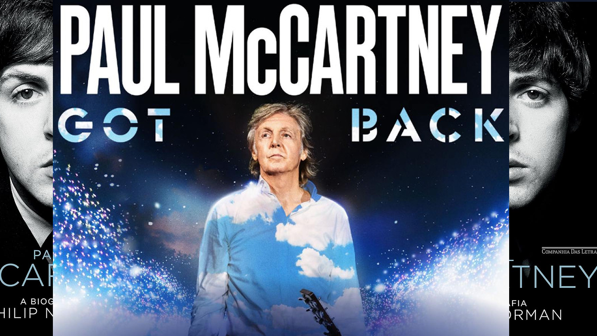

Paul McCartney
James Paul McCartney es un cantautor, compositor, músico, multiinstrumentista, escritor, activista, pintor y actor británico que junto a John Lennon, George Harrison y Ringo Starr, ganó fama mundial por ser el bajista y uno de los cantantes de The Beatles. Nació en Liverpool el 18 de junio de 1942.

Paul perteneció a la banda The Beatles
Canciones más famosas
- Come together
- Twist and shout
- Here Comes the sun